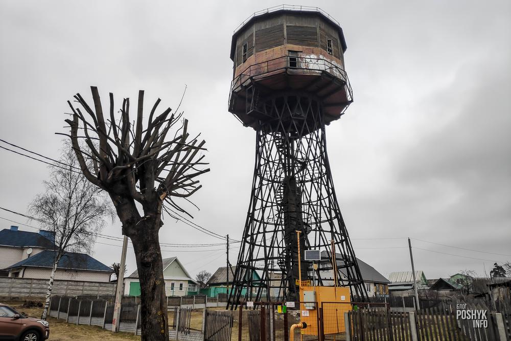
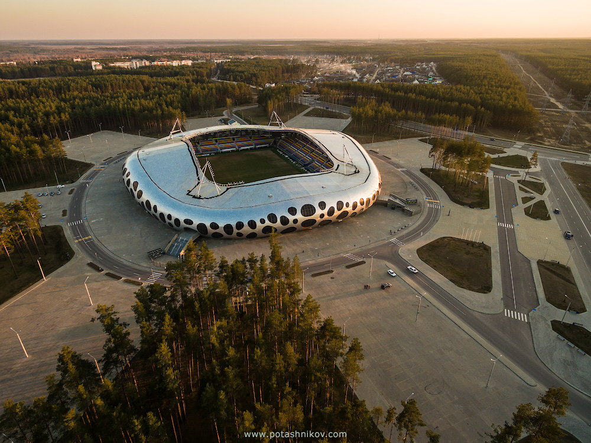
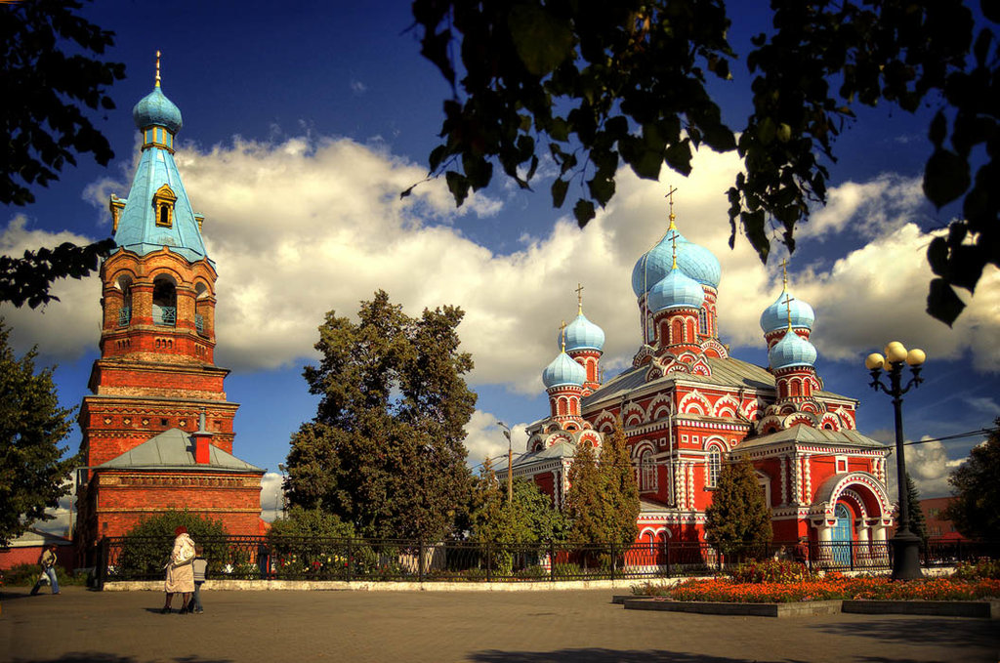

Достопримечательности |
|  |
Шуховская водонапорная башняВ Борисове есть уникальный памятник не только архитектуры, но и индустриального прогресса 20 века. Водонапорная башня возведенная в 1927 году по проекту легендарного советского инженера и архитектора Владимира Шухова. . Именно он впервые применил стальные сетчатые оболочки в строительстве. Также его заслуга в инженерии и архитектуре – введение форм однополостного гиперболоида вращения. Если просто – то водонапорная башня в городе Борисов яркий пример всех этих достижений. |
|  |
Борисов-Арена«Борисов-Арена» – это самый современный, многофункциональный футбольный стадион в Республике Беларусь, который является домашней ареной футбольного клуба БАТЭ. Общая вместимость стадиона – 13121 человек. Для болельщиков и посетителей стадиона предусмотрены парковка на 1000 машино-мест, 4 основные точки общепита, магазин футбольной атрибутики, детский игровой центр, тренажерный зал, фитнес-зал, зал для пресс-конференций. Оснащенный современным оборудованием, отвечающим всем международным нормам и стандартам, стадион может принимать не только поединки квалификационных стадий еврокубков, но и встречи Лиги Чемпионов и Лиги Европы, вплоть до полуфиналов. Ролик «Борисов-Арена» |
|  |
Свято-Воскресенский соборВоскресе́нский собо́р, Собо́р Воскресе́ния Госпо́днего — православный храм в городе Борисове. Находится в Старо-Борисове на рыночной площади. Собор является памятником ретроспективно-русского стиля, присутствуют признаки стилизации форм московского церковного строительства XVII века. |